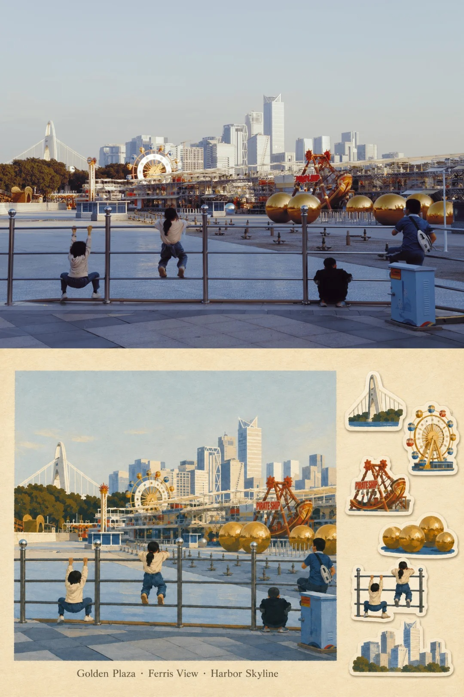

travel-memory-sticker-card：把旅遊照片變成復古貼紙小卡

一句話摘要
Threads 使用者 michelle 分享「travel-memory-sticker-card」這個有趣的 Skill：把照片轉成像童年貼紙般的旅遊記憶小卡，適合用在旅行回顧、社群貼文、明信片式紀念卡與個人知識庫視覺素材。
原文摘錄
这个SKILL好有趣
travel-memory-sticker-card
把照片变成小卡，就像小时候玩的贴纸，很好看。
值得收藏的原因
- 這是一個明確的「照片 → 風格化記憶卡」工作流案例，不只是單張圖片生成，而是可重複使用的 Skill / template 概念。
- 風格定位清楚：復古貼紙、小卡、旅遊回憶、童年感；很適合延伸成 LINE 分享圖、課程活動回顧、旅行筆記封面。
- 可放進 AI 學習雷達的「Skill 化創作流程」範例庫，之後若要設計自動產圖流程，可以參考這種小而美的輸出規格。
可延伸用法
- 旅遊照片整理：每個城市或景點生成一張貼紙小卡，做成旅行相簿索引。
- 課程／工作坊回顧：把活動照片轉成統一風格的紀念卡，方便社群貼文或成果頁使用。
- 個人知識庫視覺化：替非文字型收藏增加可識別的封面圖，讓首頁更有溫度。
- Skill 設計參考：把輸出尺寸、字體、邊框、貼紙陰影、日期與地點欄位規格化，形成可批次套用的模板。